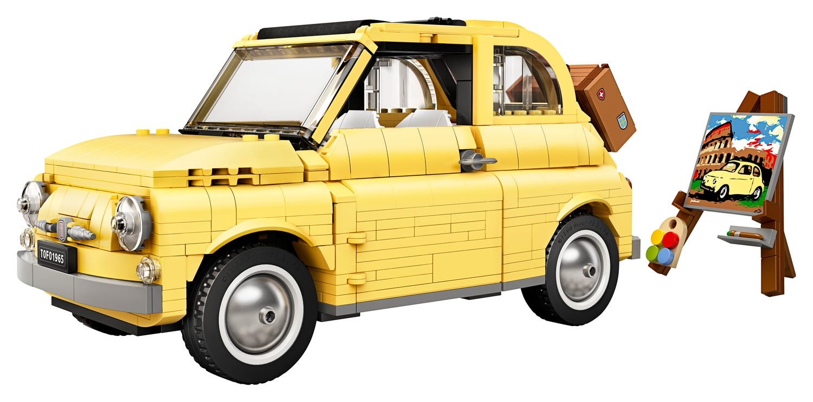
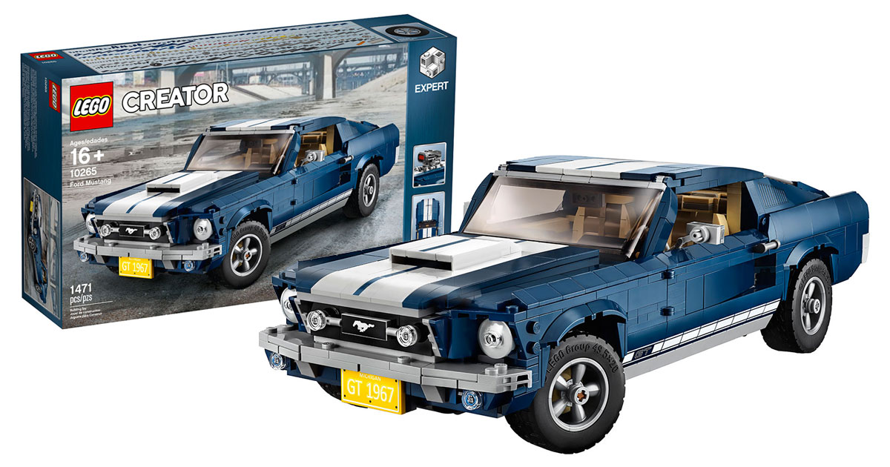

Fiat 500 (10271)
Ez a LEGO® Creator Expert Fiat 500 autómodell (10271) feleleveníti a klasszikus autótervezés valódi ikonját. A tinédzser és felnőtt rajongók örömmel fogják belevetni magukat a kihívást jelentő építési élménybe, melyet ez a 60-as évek Fiat 500F legendája alapján készült modellkészlet nyújt. A rajongókra olyan valódi LEGO kockákból kialakított részletek várnak, mint a bőrönddel ellátott csomagtartó, a részletesen kialakított belső tér, valamint a nyitható tető, ajtók, motorháztető és hátsó ajtó. Hogy teljes legyen az olasz hangulat, ez a klasszikus autómodell egy összecsukható festőállványt is tartalmaz ecsettel, palettával és a híres római Colosseum előtt álló autóról készült kis „festménnyel“.
Ford Mustang(10265)
Fedezd fel a jellegzetes, 1960-as évekbeli amerikai sportkocsi varázsát a LEGO® Creator Ford Mustang szettel, melyet fehér versenycsíkokkal díszített, sötétkék karosszéria, motorháztető, nyomtatott musztáng rács jelvény, GT emblémák és tapadó abroncsokkal ellátott, 5-küllős keréktárcsák jellemeznek. A Forddal együttműködve kifejlesztett hiteles másolathoz választható kiegészítők is tartoznak, melyekkel testre szabhatod a modellt. Ilyen például a többfajta rendszámtábla, a kompresszor, a hátsó légterelő szárny, az erőteljes kipufogócsövek, az első légterelő és a dinitrogén-oxid tartály. Akár még a hátsó tengely emelkedési szintjét is állíthatod, a minél ütősebb kinézet érdekében! Vedd le a tetőpanelt vagy nyisd ki az ajtókat, hogy hozzáférj a részletesen kidolgozott belsőtérhez, ahol impozáns üléseket, rádiót, működő kormánykereket és középkonzolon elhelyezett sebességváltót is találsz. Tárolj különböző elemeket a csomagtartóban, vagy nyisd fel a motorháztetőt, hogy felfedezd a részletesen kidolgozott, 390-es nagy blokkos V8-as motort akkumulátorral, tömlőkkel és légszűrővel kiegészítve. Ezt a haladó szintű készletet úgy alakítottuk ki, hogy kihívásokkal és nosztalgiával teli, izgalmas építési élményt nyújtson, emellett otthonodban vagy az irodában is nagyszerű központi darab lehet.
Harley-Davidson® Fat Boy®(10269)

Fedezd fel az ikonikus mérnöki munka apró részleteit a LEGO® Creator Expert 10269 Harley-Davidson® Fat Boy® motorkerékpárral! A Harley-Davidsonnal együttműködve kifejlesztett és részletesen kidolgozott LEGO motorkerékpár megragadja a valódi gép varázsát. Emellett a tömör féktárcsás Lakester kerekekkel, tömzsi gumiabroncsokkal és könnycseppalakú üzemanyagtartállyal ellátott modellt nyomtatott logók és egy beépített sebességmérő egészíti ki. Továbbá találsz egy Milwaukee-Eight® motort mozgó dugattyúkkal, kettős kipufogócsövet, kormányt, mozgatható sebességváltó pedált és fékkarokat, egy kitámasztót és egy strapabíró bemutatóállványt is. A sötét vörös és fekete színösszeállítással kialakított, csodálatos kiállítható modell igazán jellegzetes központi dekorációként szolgálhat otthon vagy az irodában. Ez a tapasztalt építőknek szánt LEGO készlet magával ragadó és izgalmas építési élményt nyújt.